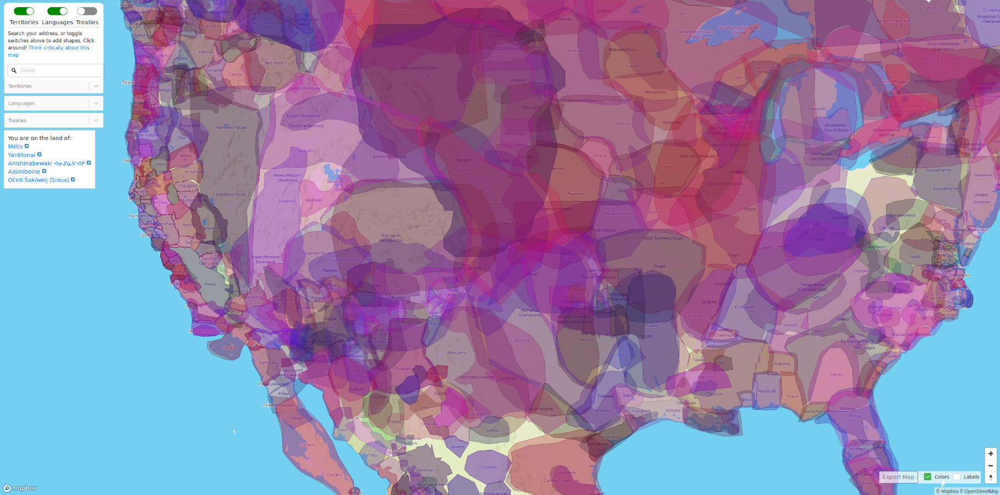

Decolonization
for Survivors
Ecosteader & Company
ecosteader.com
Winter Solstice 2019
“Decolonize the concepts. Indigenous communities have the power, strength, and intelligence to develop culturally-specific strategies of liberation, health, and well-being. Indigenous people have the right to accept new ways of thinking, reconstruct them, or to deny them.
Translation is not only encouraged but necessary.”1
Figure
㉠:
Kitasoo / Xai’xais “The First Nations community of Klemtu in the
heart of the Great Bear Rainforest.”
For more info on the artwork sources, adaptations, and the use of symbols among various First Nations, see: https://ecosteader.com/tags/indigenous
“American colonial ideas of self-government came as much from the colonists’ observations of tribal governments as from their Protestant or Greco-Roman heritage. Neither Greece nor Rome had the kind of pluralistic democracy as that concept had been understood in the United States since Andrew Jackson, but the tribes, particularly the gynarchical tribal confederacies, did. It is true that the oligarchic form of government that colonial Americans established was originally based on Greco-Roman systems in a number of ways, such as its restriction of citizenship to propertied white males over twenty-one years of age, but it was never a form that Americans as a whole have been entirely comfortable with. Politics and government in the United States during the Federalist period also reflected the English common law system as it had evolved under patriarchal feudalism and monarchy – hence the United States’ retention of slavery and restriction of citizenship to propertied white males.”
~ Paula Gunn Allen “Pushing Up the Sky”. The Sacred Hoop 1986
“Settler colonialism is said to be a structure, not an historic event, whose endgame is always the elimination of the Natives in order to acquire their land, which it does in countless seen and unseen ways. These techniques are woven throughout the US’s national discourse at all levels of society. Manifest Destiny—that is, the US’s divinely sanctioned inevitability—is like a computer program always operating unnoticeably in the background. In this program, genocide and land dispossession are continually both justified and denied.
Like white fragility, settler fragility is the inability to talk about unearned privilege—in this case, the privilege of living on lands that were taken in the name of democracy through profound violence and injustice. Like white privilege, white supremacy is also at the root of settler fragility. The difference is that foreign invasion, dispossession of Indigenous lands, and genocide were based on (white) European religious and cultural supremacy as encoded in the doctrine of discovery, not racial supremacy. And, unlike for other people of color who have made significant legal gains in the US legal system ...” ~ Dina Gilio-Whitaker “Mainstream Settler Society Needs a Land- and Place-Based Ethic”
Mormons are murderers:
“When the Mormons first reached Utah in 1847, there were an estimated 20,000 Native Americans within the territory. By 1900 the number had plummeted to 2,623. In other words, eighty-six percent of the Indians in Utah vanished in half a century.” Decolonization is not a metaphor. Eve Tuck & K. Wayne Lang 2012
Honor Indigenous Peoples
NOT COLUMBUS OR PIONEERS
Australia’s burning
Colonial economics are stupid and bad
(BTW YOU ARE STILL FAILING ON ALL CONTINENTS)
White supremacists have no future
Universe’s extreme last call “backup emergency plan” to save baby Yodas
Koalas
Unique marsupial species
with as many rights as
Native Eucalyptus,
Smart teams of birds,
etc.
And its governor goes and tries to hide in Hawai’i?
The US has an impeached coward trying to run the show.
Great Britain’s doomed by division.
Canada thinks four-wheelers can replace four-leggeds.
All of North America doesn’t have to be doomed.
Learn
about Land Acknowledgements
→
READ: “You cannot discover lands already inhabited” Unsettling Truths. The Ongoing Dehumanizing Legacy of the Doctrine of Discovery. Mark Charles and Soong-Chan Rah. 2019,
VISIT: https://native-land.ca and figure out whose land you’re on.
Resources include detail about languages, people, trading areas, many of which overlap with ….(get this):
No walls or official borders.
 Still here, yup.
A Decolonization Primer for Colonized Folks: AKA “Fragile White Settlers”
(the condensed version)
America. It's the place European colonists (most of your ancestors) came and stole land from the natives, claiming they just wanted a better life for their children.
That’s not what happened though.
The Dust Bowl was one of the greatest ecological disasters of the early 20th Century: ignorant, idiotic farmers killed the native bison – which knew how to graze on the land and make it more fertile.
"In areas where bison graze, plants contain 50 to 90 percent more nutrients by the end of the summer. This not only provides extra nourishment for other grazers, but prolongs the growing season of the plants themselves."”2
But these beautiful creatures were far too big and powerful for the white man.
Drawling cattle ranchers instead decided to terrorize and trample the land for “hamberders”. Farmers took THOUSANDS of acres in greed, far far more than any one family could manage, all the while grifting government subsidies.
Today it continues in a more perverse and disgusting way: ignorant, idiotic colonists buy and sell land, flip it for profit – ripping up vibrant and precious ecosystems that were already abundant with food to build subdivisions, garish hotels, HOAs, golf courses, strip malls and roads. Still yet, the delusional landlords and “property management companies” (those evil-veiled entities that landlords use to collect rents) keep demanding increasingly expensive leases and rents and fees and real estate commissions as if it were their "right" while more and more people end up homeless on the streets.
IT WAS NEVER ANYONE’S RIGHT.
You have nothing to be patriotic about: this “American” system you think is so great is not.
You, my friend, have got to stop living the delusion.
Acknowledge that your ancestors failed to learn the intricate details of history, their own history on a different continent … it’s okay! Your people are indigenous to somewhere that is not North America.
As far as we can tell: Christianity is a hoax designed to enslave your mind to the economic motives of patriarchy. We don’t abide by patriarchy.
These lands are not “belong to”, Republikkkans.
Colonial deals do not mean anything.
IF YOU CAN HANDLE THE TRUTH, here it is:
You are the guests on this land.
You have a limited amount of time here.
Acknowledge and respect the hosts.
PROPERTY TITLES AND DEEDS ARE INVALID.
Speak the Names of the Peoples On Whose Land You Guest.
That’s right . Your TR45ONIST president is
“A hotelier who never had the right to hotel!”
STOP NOTICE
REQUIRE ALL LOCAL FIXES
before any global-oriented move
Republikkkans are scared because
The nonwhite Clan Mothers are still Superior.
Bravery is not being afraid to listen to the Women.
“"4. The physical and cultural genocide of American Indian tribes is and was mostly about patriarchal fear of gynocracy. The [insert western Christian denominations] missionaries ... could not tolerate peoples who allowed women to occupy prominent positions and decision-making capacity at every level of society."”
Consequences happen.
Seafloor drilling created atrocious doom in 2010.
Other warnings were not heeded
https://www.youtube.com/watch?v=eAlRwi9mnwA
Indigenous
Sovereignty
Acknowledge it.
Inherent to the particle.
Intricate Details
Are usually not possible
in the vicinity of destruction.
Sinkholes happen.
Endnotes // include this astoundingly obvious advice:
DO NOT BASE ANYTHING ON A FAILED SYSTEM.
FAILED SYSTEMS INCLUDE OLIGARCHIES LIKE RUSSIA; EXCLUDE PATRIARCHAL OLIGARCHIES AND THE SOCIETIES THAT ENABLE THEM.
FAILED SYSTEMS INCLUDE MONARCHIES; EXCLUDE EUROPEAN MONARCHIES.
* ~ * ~ *
EXCLUDE ALL REALTORS, BROKERS, HOTELIERS, LANDLORDS, PROPERTY MANAGEMENT COMPANIES, LLCS, AND OTHER TRAVESTIES RESULTANT FROM COLONIAL IDEAS ABOUT “HOW TO MAKE MONEY EXPLOITING LAND”. YOU CANNOT DO THIS TOO SOON.
IF YOU WORK FOR THEM, EVEN AS A “SECRETARY”, YOU’RE JUST A COMPLICIT ENABLER.
GET HELP.
THERE ARE NO EXCUSES.
White supremacists are in their vector to doom; don’t let them distract you.
Creative Commons
copyleft: 2020